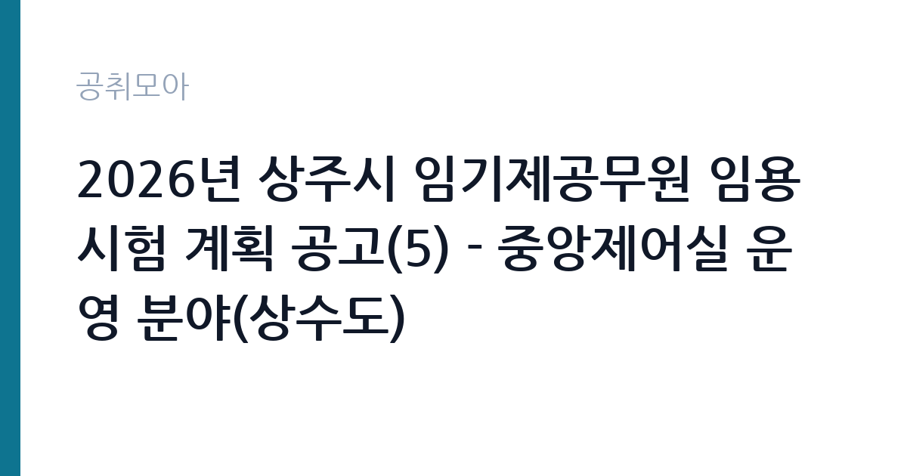

[지자체] 2026년 상주시 임기제공무원 임용시험 계획 공고(5) - 중앙제어실 운영 분야(상수도)
경상북도 상주시 · 경북 · 마감 2026-10-20 (D-15) · 출처 나라일터

한눈에 보는 모집 조건
| 기관 | 경상북도 상주시 |
|---|---|
| 공고명 | 2026년 상주시 임기제공무원 임용시험 계획 공고(5) - 중앙제어실 운영 분야(상수도) |
| 고용형태 | 임기제 |
| 근무지 | 경북 |
| 게시일 | 2026-10-06 |
| 마감일 | 2026-10-20 (D-15) |
지원자격, 이렇게 읽으세요
- 시간선택제임기제 라급 1명
- 접수 ~2026-10-20 마감
- 세부 조건은 원문 공고문 확인
중앙제어실 운영 분야는 통상 전기, 전자, 기계, 환경, 토목 등 관련 분야 자격증 소지자나 정수장, 배수시설, 플랜트 운영 경력자를 요구하는 경우가 많습니다. 기능사 이상의 자격증이 가산점으로 반영되는 공고도 있으므로 보유 자격을 빠짐없이 기재하시기 바랍니다. 확정 응시자격은 원문 공고문에서 확인하셔야 합니다.
이 공고의 포인트
이 공고의 포인트는 상수도라는 필수 공공서비스의 심장부에서 일한다는 점입니다. 중앙제어실에서는 취수와 정수, 배수 전 과정을 관제 시스템으로 감시하고 이상 징후에 대응합니다. 라급은 8급 상당이며 임용 기간 2년에 최대 5년까지 연장될 수 있습니다. 교대근무나 비상대기 가능성을 염두에 두시고 지원하시기 바랍니다.
전형은 어떻게 진행되나
전형은 서류전형과 면접시험으로 진행되며 필기시험이 없습니다. 접수는 2026년 10월 19일부터 10월 20일까지 단 이틀이므로 서류를 미리 준비하셔야 합니다. 접수 방법과 제출처는 원문에서 확인하시기 바라며, 문의처는 상주시 총무과 054-537-7163입니다.
원문에서 확인한 전형 방식
○ 모집분야: 중앙제어실 운영(1명) ○ 근무지역: 경북 상주시 (상주시 상수도사업소) ○ 임용기간: 2년(최대 5년) ○ 선발방법: 서류전형 및 면접시험 ○ 접수기간 : 2026년 10월 19일 ~ 2026년 10월 20일 ○ 문의처 : 054-537-7163
이런 분께 추천해요
- 정수장이나 배수시설, 플랜트에서 계측제어나 설비 운영을 해보신 분
- 전기나 기계, 환경 분야 자격증을 보유하고 공공부문 근무를 희망하시는 분
- 상주 지역에 거주하면서 안정적인 실무직을 찾는 분
지원 전 체크리스트
- 접수 기간이 10월 19일부터 20일까지 단 이틀이므로 미리 준비하셔야 합니다
- 보유 자격증과 시설 운영 경력을 증빙할 서류를 빠짐없이 챙기셔야 합니다
- 교대근무와 비상대기 같은 근무 형태를 원문에서 확인하셔야 합니다
- 시간선택제 근무시간 비율에 따른 보수 수준을 확인하고 지원하셔야 합니다
모집 일정과 제출 타이밍
공고 게시일은 2026년 10월 6일이며 원서 접수는 10월 19일부터 20일까지입니다. 이후 서류전형 합격자 발표와 면접시험이 이어집니다. 접수 기간이 매우 짧으므로 채용 공고문의 제출 서류 목록을 먼저 출력해 체크리스트로 활용하시기 바랍니다.
직무 이해하기: 지자체
중앙제어실 운영 담당자는 상수도 취수장과 정수장, 배수지와 가압장의 운전 상태를 관제 화면으로 감시하고 수질과 수압, 유량 데이터를 기록합니다. 경보 발생 시 현장 직원과 연락해 밸브 조작이나 설비 점검을 지시하고, 단수 사고나 수질 민원 발생 시 초동 대응을 맡습니다. 야간과 휴일에도 시설이 멈추지 않으므로 당직과 비상연락 체계 안에서 근무하게 됩니다.
자기소개서 작성 팁
자기소개서에는 다뤄본 설비와 관제 시스템 경험을 장비명과 함께 구체적으로 적으시기 바랍니다. 고장이나 경보 상황에 대응했던 사례가 있다면 판단 과정과 결과를 중심으로 서술하시면 좋습니다. 시민의 식수를 책임진다는 공익적 각오를 한 문단으로 정리하시면 진정성이 전달됩니다.
면접 준비 포인트
면접에서는 상수도 시설의 기본 흐름인 취수와 정수, 배수 과정을 설명할 수 있어야 합니다. 야간 경보나 단수 민원 같은 돌발 상황에 어떻게 대응할지 묻는 질문이 나올 수 있으므로 본인의 경험을 연결해 답변하시기 바랍니다. 시간선택제 근무 형태에 대한 이해와 장기 근무 의사를 분명히 밝히시기 바랍니다.
급여·근무조건 읽는 법
시간선택제임기제 라급은 8급 상당으로 지방공무원보수규정의 하한액을 기준으로 보수가 책정됩니다. 시간선택제는 실제 근무시간 비율만큼 보수를 받으며, 야간과 휴일 근무가 발생하면 관련 수당이 지급될 수 있습니다. 정확한 월 보수액과 주당 근무시간, 당직비 지급 여부는 원문 공고문에서 확인하셔야 합니다. 출처는 지방공무원보수규정과 임기제 보수 안내 자료입니다.
자주 묻는 질문
- 중앙제어실 근무에 꼭 자격증이 필요합니까
공고마다 다르지만 관련 분야 자격증 소지자를 우대하는 경우가 많습니다. 확정 조건은 원문 공고문의 응시자격표에서 확인하시기 바랍니다. - 교대근무를 합니까
상수도 시설은 24시간 가동되므로 당직이나 교대 가능성이 있습니다. 확정 근무 형태는 원문 공고문에서 확인하시기 바랍니다. - 임기는 얼마나 됩니까
임용 기간은 2년이며 근무 실적에 따라 최대 5년까지 연장될 수 있습니다.
함께 보면 좋은 공고
[지자체] 2026년 제3회 상주시 임기제공무원 임용시험 계획 공고(6) - 학예연구 분야 — 마감 2026-10-20[지자체] 2026년 제3회 상주시 임기제공무원 임용시험 계획 공고(4) - 상황실 전담요원 분야 — 마감 2026-10-20[지자체] 2026년 제3회 상주시 임기제공무원 임용시험 계획 공고(3) - 외국인 계절근로자 전담 분야 — 마감 2026-10-20출처: 나라일터 공개정보를 바탕으로 공취모아가 정리한 안내글입니다. 모집 조건·일정은 변경될 수 있으니 지원 전 반드시 원문 공고문을 확인하세요. 본 글은 정보 제공용이며 합격을 보장하지 않습니다.